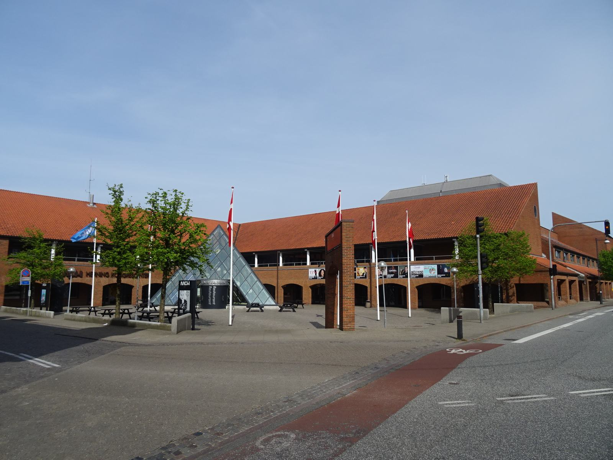

Venue · Exhibition grounds
MCH Messecenter Herning
- Type
- Exhibition grounds
- Location
- Herning, Denmark
- Address
- Vardevej 1, 7400 Herning
- Exhibition space
- 110,000 m²
- Halls
- 15 halls of 2,000–14,000 m² each, officially 110,000 m² of indoor area
- Official website
- https://www.mch.dk/om-os/lokationer/mch-messecenter-herning
About
Herning exhibition centre officially at Vardevej 1, 7400 Herning. Official copy states 15 halls of 2,000–14,000 m² each and 110,000 m² of indoor area (indendørs arealer), stored as exhibition_sqm with the caveat that the figure is official indoor area rather than a separately labelled exhibition-hall total. A published maximum delegate figure was not taken from the retrieved official page.
Upcoming events
Sources
- Official source — https://www.mch.dk/om-os/lokationer/mch-messecenter-herning